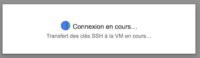

Spin off a virtual Machine
- Go to the Google Cloud Dashboard and select "Compute Engine" on the left hand menu bar
-
Select the submenu "Instances de VM"

-
Click on the top bar menu the "CREER UNE INSTANCE" panel
- Put name "bare-galaxy"
- Choose a Zone (suggestion:
europe-west1-c) - Type de machine: choose 2 vCPU with 7.5 Memory
- Disque de Démarrage: Click on
Modifier- Select
Ubuntu 14.04 LTS - At the bottom of the form, put 100 Go for the Disk Size (Taille)
- Leave the selection
Disque persistant standard/Standard persistant drive - Click
Select/Sélectionner
- Select
- Click
Authorize HTTP traffic/Autoriser le traffic HTTP -
Click
Créer/CreateConnect to the started virtual Machine
After a few seconds, the VM turns on "green" and an
sshmenu becomes selectable
-
Roll down this
sshmenu and select the first optionOuvrir dans la fenêtre du navigateur
-
A shell console pop out and you should now be ready to control your VM with linux command lines


-
Try to enter the drosofff@bare-galaxy:~$
sudo -icommand and hit the return key. - The unix prompt become
root@bare-galaxy:~#, you are mastering your VM as root administrator ! - [Optional] Here, if you do not have to work with the VM, you can turn off the VM and even trash it:
- in one shot, go back to your VM control panel in the web browser, ensure that the running VM is checked, and press the Trash button in the top menu.
- Confirm that you want to trash the VM and loose everything.
- after a few seconds the VM disappears from the Dashboard.